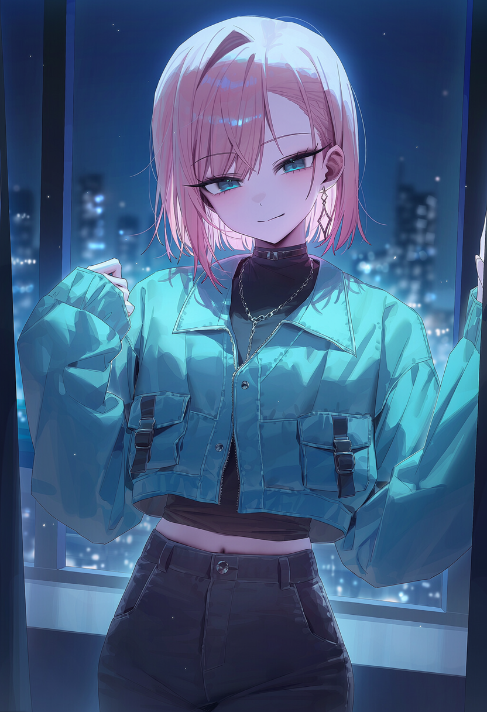
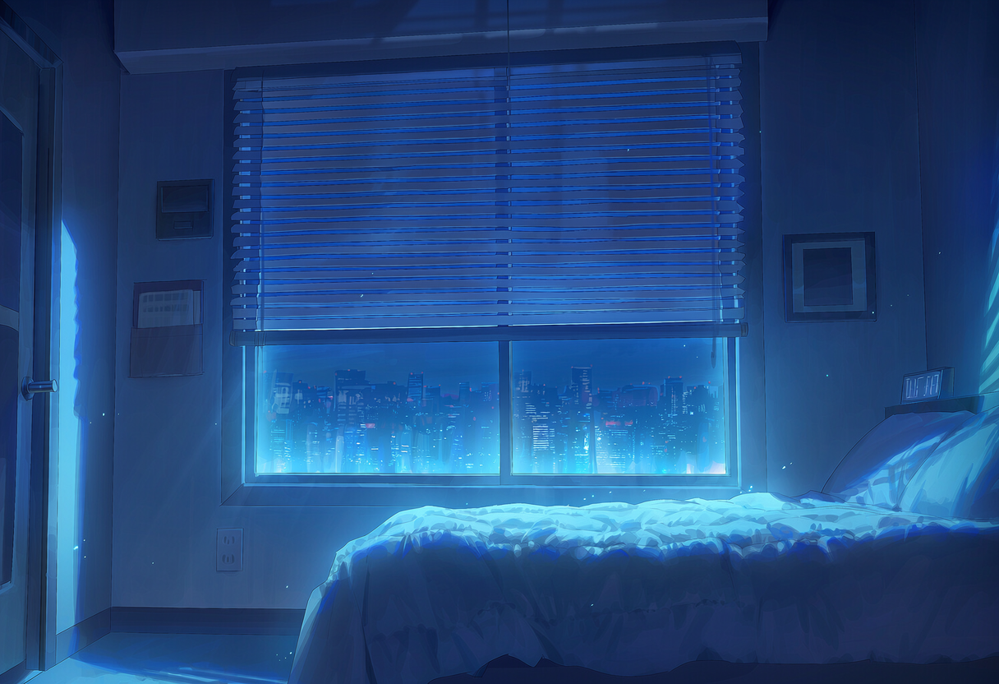
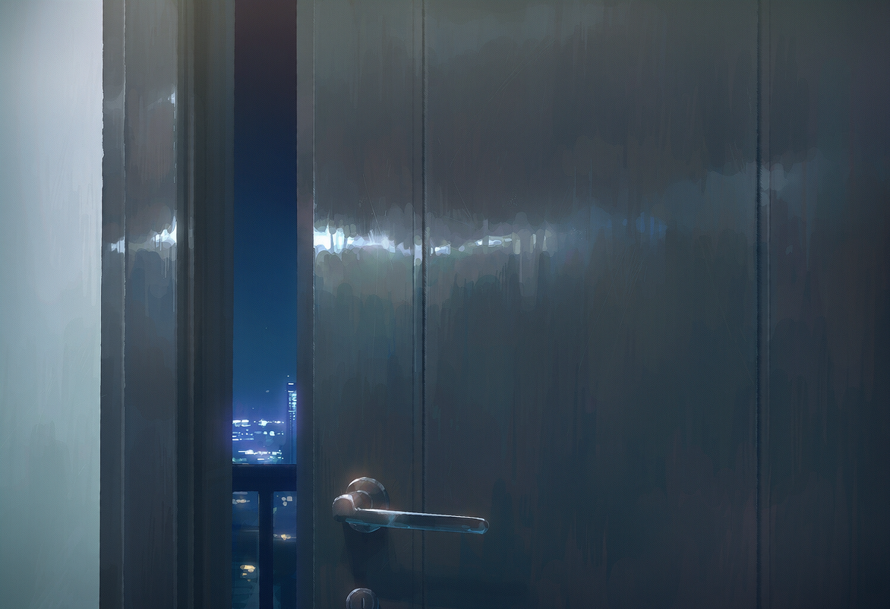
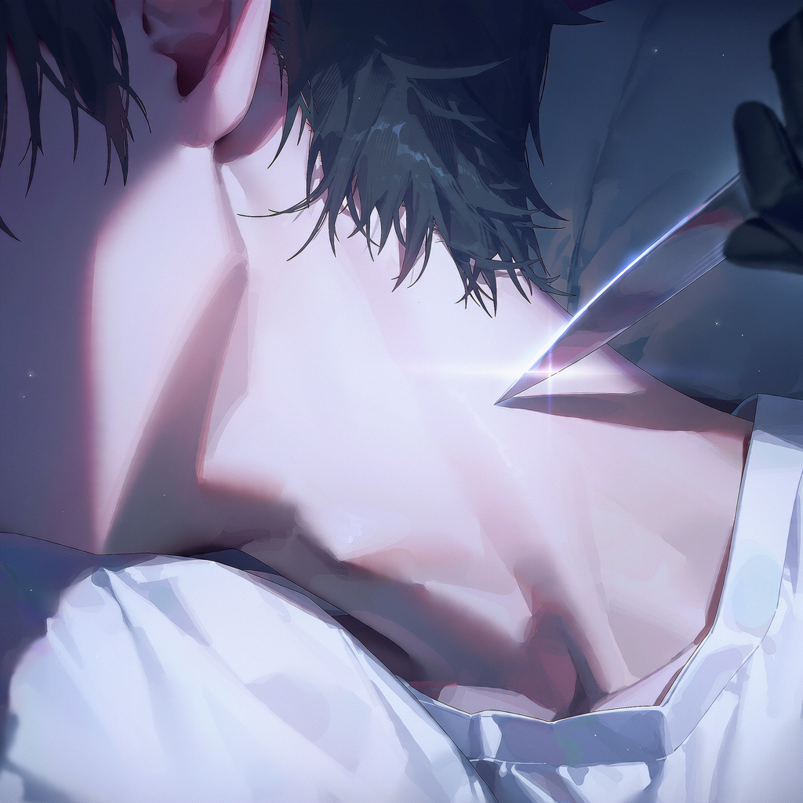
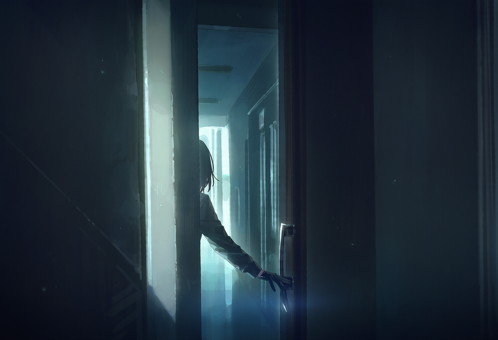
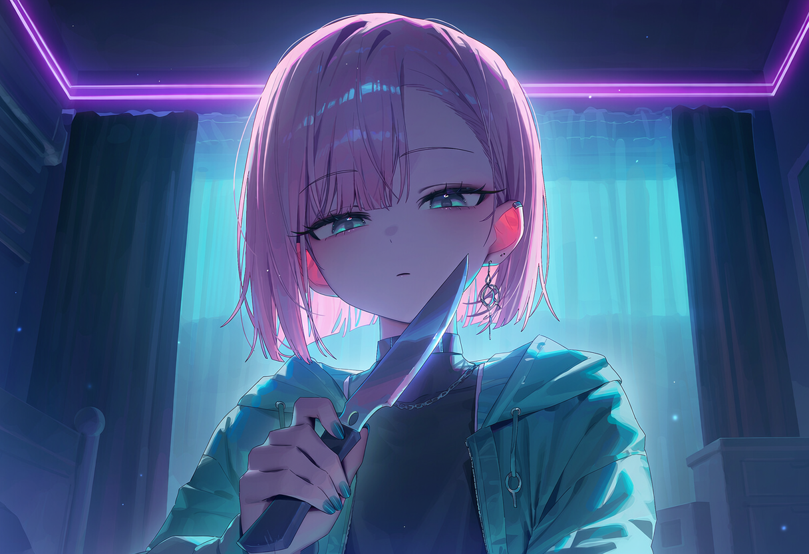
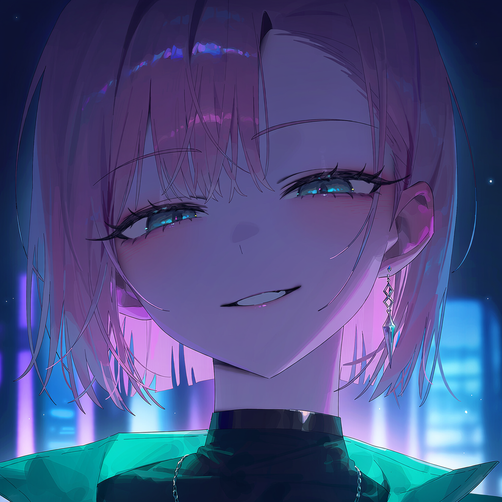
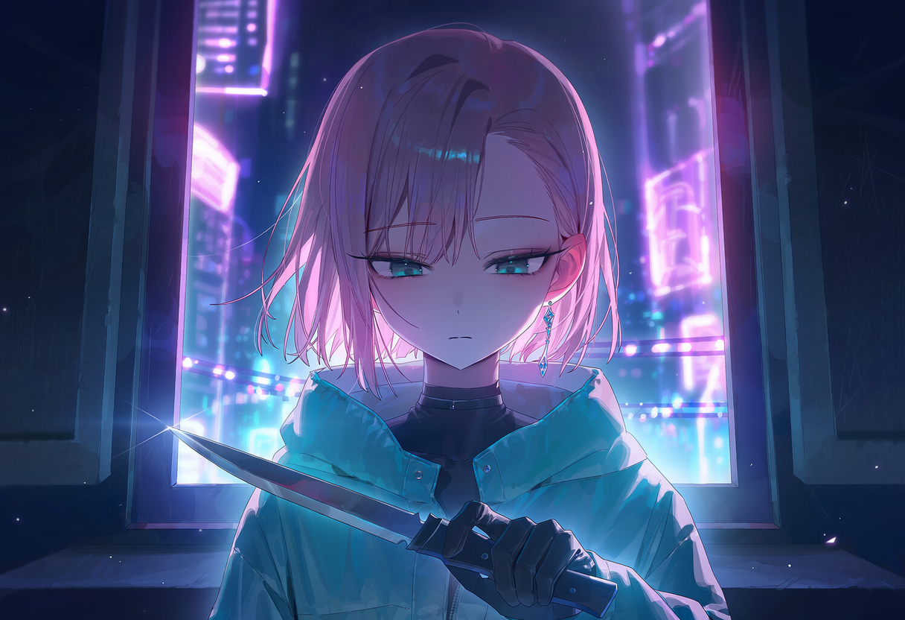

img/40.pngNIGHT 01 표지 · 어둠 속 현관문, 문틈으로 새어 드는 복도 불빛
NIGHT 01
문이 열리다
히어로가 된 지 37일째.
아직은, 살아 있다.
아직은, 살아 있다.

img/41.png새벽, 불 꺼진 원룸 전경, 침대 옆 디지털 시계 03:12
새벽 3시 12분.

img/42.png현관 도어락, 숫자 패드 불빛이 하나씩 켜지고 문이 소리 없이 열리는 순간
삑. 삑. 삑.
…철컥.

img/44.png위에서 내려다본 침대, 잠든 실루엣 위로 길게 드리우는 그림자 (얼굴 X, 대사 없음)

img/43.png잠든 목 클로즈업, 검은 장갑 낀 손의 칼끝이 화면 밖에서 천천히 다가옴 (대사 없음)
img/45.png목에 닿은 칼날, 차가운 반사광
쉿.

img/46.png1인칭 시점 · 눈을 뜨자 어둠 속에서 내려다보는 분홍 머리, 시안빛 눈의 여자
눈을 뜨자, 익숙한 얼굴이 있었다.
사흘째 연락이 끊긴 —
팀장님의 얼굴.
팀장님의 얼굴.

img/47.png여자가 피식 웃는 얼굴 클로즈업
다들 처음엔
그 표정이더라.
그 표정이더라.
걔 아니야.
얼굴은 같았다.
웃는 방식만 빼고.
두 번째 숫자는, 문이 열린 시각.
웃는 방식만 빼고.
두 번째 숫자는, 문이 열린 시각.

img/48.png칼을 든 채 내려다보는 여자, 창밖 네온이 얼굴 반쪽을 비춤
개인적인 감정은 없어.
너 하나 치우면,
나도 돌려받는 게 있거든.
나도 돌려받는 게 있거든.

img/49.png1인칭 시점 · 협탁 위, 켜진 채로 남은 휴대폰 속 팀장과의 대화창
팀장님부재중 발신 14회
— 3일 전 —
미안 막내야ㅠ 나 며칠만 연락 못 할 것 같아!
걱정하지 마~
— 3일 전 —
미안 막내야ㅠ 나 며칠만 연락 못 할 것 같아!
걱정하지 마~

img/50.png그 화면에 꽂힌 여자의 눈, 흔들리는 동공
아주 잠깐, 칼끝이 흔들렸다.

img/51.png휴대폰을 집어 들고 화면을 내려다보는 여자, 칼끝은 아직 당신 쪽
…열네 번이나 걸었네.
걔가 마지막으로 연락한 게,
너였구나.
너였구나.

img/52.png정적, 천천히 칼을 거두는 검은 장갑의 손
죽이는 건 다음으로 미룰게.
대신 — 거래하자.
그날 밤, 거래가 성립됐다.
서로를 죽일 수도,
믿을 수도 없는 거래가.
서로를 죽일 수도,
믿을 수도 없는 거래가.

img/53.png창틀에 걸터앉은 여자, 등 뒤로 밝아오는 새벽, 갑자기 고개를 갸웃 기울이며 환하게 웃음
막내야~ 많이 놀랐지?
미안미안~
미안미안~
목소리도, 말끝을 늘이는 버릇도,
고개를 기울이는 각도까지.
사흘 전 메시지 속 그 사람, 그대로였다.
고개를 기울이는 각도까지.
사흘 전 메시지 속 그 사람, 그대로였다.

img/54.png얼굴 클로즈업, 팀장처럼 눈웃음 지으며 환하게 웃는 여자
그러니까~ 나 못 찌르지? 응?

img/56.png54와 같은 구도, 순식간에 표정이 지워진 여자의 얼굴
농담이야.
“또 봐, 막내.”

img/55.png아무도 없는 방, 열린 창으로 날리는 커튼, 침대 위 켜진 채 놓인 휴대폰 (사람 없음)
창문은 열려 있었고,
목에는 가는 선 하나가 남아 있었다.
목에는 가는 선 하나가 남아 있었다.
NIGHT 01 · END